CMP07 — Inverter AC vs Normal AC: Kaunsa AC Lein?
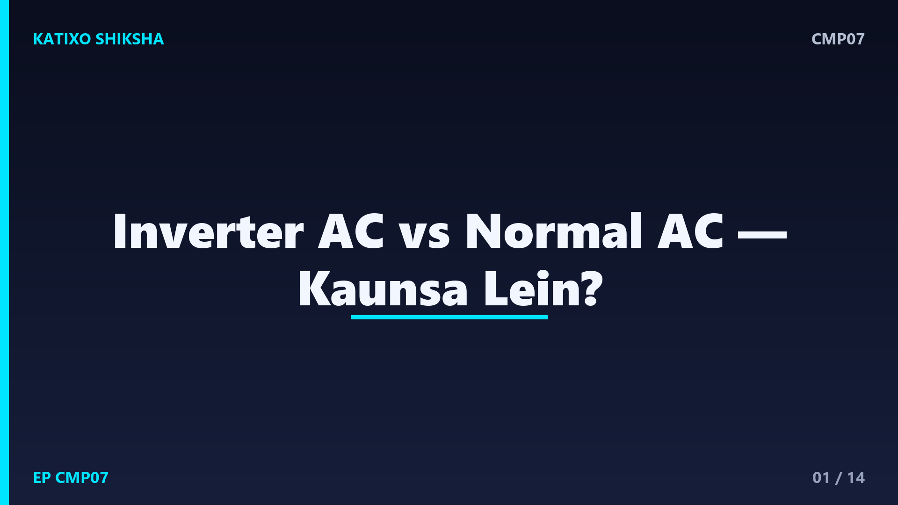
Slide 1दोस्तों, गर्मी आते ही घर में एक बहस छिड़ जाती है — नया AC लें तो Inverter AC लें या Normal AC? दुकानदार कहता है Inverter वाला बिजली बचाता है, पर वो महँगा भी तो होता है। फिर आपके लिए सही कौनसा है? बहुत लोग यहीं confuse होकर या तो ज़्यादा पैसा ख़र्च कर देते हैं या बिजली का बड़ा बिल भुगतते हैं। Katixo KhojLab की इस comparison episode में हम Inverter AC और Normal AC, दोनों को आसान भाषा में समझेंगे, फ़ायदे-नुक़सान देखेंगे, और बताएँगे किसके लिए क्या सही है।
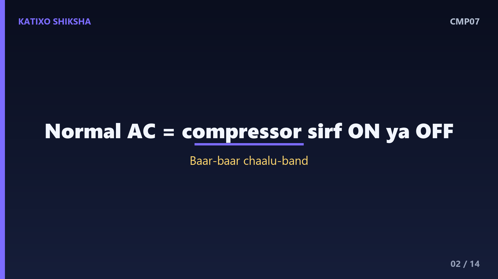
Slide 2पहले Normal AC समझते हैं, जिसे fixed-speed AC भी कहते हैं. इसके अंदर एक compressor होता है, जो AC का दिल है — यही कमरे को ठंडा करता है। Normal AC में ये compressor सिर्फ़ दो ही हाल में रहता है — या तो पूरी ताक़त से चालू, या पूरा बंद। जब कमरा ठंडा हो जाए तो ये बंद हो जाता है, और तापमान बढ़ने पर फिर से पूरी ताक़त से चालू। यानी ये बार-बार on-off होता रहता है। यही बार-बार चालू-बंद होना बिजली ज़्यादा खाता है और थोड़ी आवाज़ भी करता है।
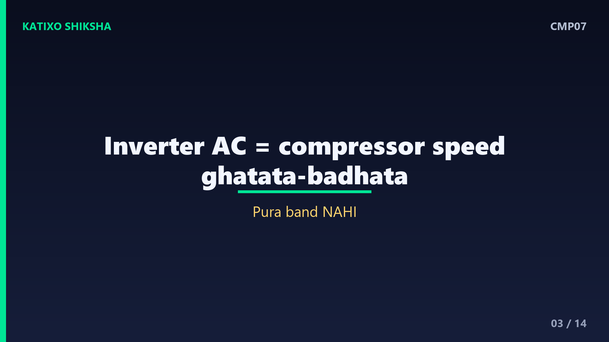
Slide 3अब Inverter AC समझो, जो ज़्यादा समझदारी से चलता है. इसमें भी वही compressor होता है, पर ये पूरा बंद होने के बजाय अपनी रफ़्तार घटाता-बढ़ाता रहता है। जब कमरा गरम हो तो ये तेज़ चलता है, और जैसे ही कमरा ठंडा हो जाए, ये धीमा होकर बस उतनी ही ठंडक बनाए रखता है जितनी ज़रूरत है — पूरा बंद नहीं होता। बार-बार पूरी ताक़त से चालू होने की ज़रूरत नहीं पड़ती, इसलिए ये कम बिजली खाता है और ठंडक भी ज़्यादा एक-सी रहती है।
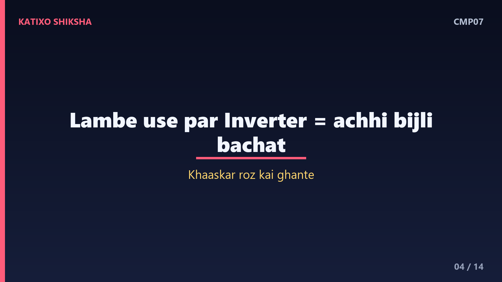
Slide 4अब सबसे बड़ा फ़र्क़ — बिजली की बचत. यहीं Inverter AC अपनी असली कमाल दिखाता है। चूँकि ये धीमे-धीमे चलकर सिर्फ़ ज़रूरत भर ठंडक बनाए रखता है, इसलिए लंबे इस्तेमाल पर ये Normal AC से अच्छी-ख़ासी बिजली बचाता है। ख़ासकर जब AC रोज़ कई घंटे चले — जैसे गर्मियों की रातों में। बचत कितनी होगी ये कमरे, मौसम और इस्तेमाल पर निर्भर करती है, पर आम तौर पर रोज़ाना भारी इस्तेमाल में Inverter AC का बिजली बिल काफ़ी कम आता है।
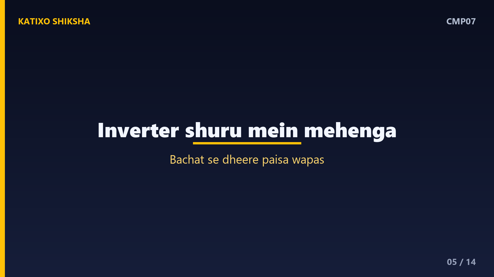
Slide 5अब क़ीमत की बात, क्योंकि असली फ़ैसला यहीं अटकता है. ख़रीदते समय Inverter AC आम तौर पर Normal AC से कुछ हज़ार रुपये महँगा होता है। यानी शुरुआत में आपकी जेब पर थोड़ा ज़्यादा बोझ। पर ये फ़र्क़ बिजली की बचत से धीरे-धीरे वापस आ जाता है। तो असली सवाल ये है — आप AC कितना चलाओगे? अगर रोज़ कई घंटे, तो महँगा होकर भी Inverter सस्ता पड़ता है। और अगर बहुत कम, तो ये ज़्यादा क़ीमत वापस आने में लंबा समय लग सकता है।
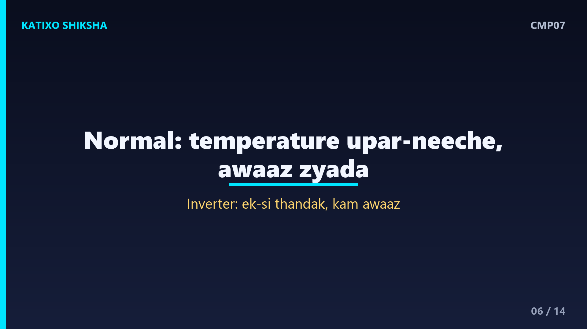
Slide 6अब आवाज़ और ठंडक की एक-सी quality की बात. Normal AC बार-बार पूरी ताक़त से चालू-बंद होता है, इसलिए तापमान थोड़ा ऊपर-नीचे होता रहता है, और चालू होते वक़्त आवाज़ भी ज़्यादा आती है। Inverter AC धीरे और लगातार चलता है, इसलिए ठंडक ज़्यादा एक-सी रहती है और आवाज़ भी कम होती है। सोने के लिए या पढ़ाई के कमरे के लिए ये एक-सी, शांत ठंडक एक बड़ा आराम होती है। यानी Inverter सिर्फ़ बिजली ही नहीं, सुकून भी थोड़ा ज़्यादा देता है।
Slide 7अब payback यानी पैसा वापस आने का गणित, आसान example से. मान लो Inverter AC, Normal से करीब आठ हज़ार रुपये महँगा है। पर अगर रोज़ भारी इस्तेमाल से ये हर महीने बिजली बिल में अच्छी बचत करवाता है, तो कुछ ही गर्मियों में ये अतिरिक्त पैसा वापस आ जाता है, और उसके बाद हर साल आपकी शुद्ध बचत। उल्टा, अगर AC बहुत कम चले, तो बचत धीमी होगी और वो आठ हज़ार वापस आने में बरसों लग सकते हैं। यानी आपका असल इस्तेमाल ही असली फ़ैसला करता है।
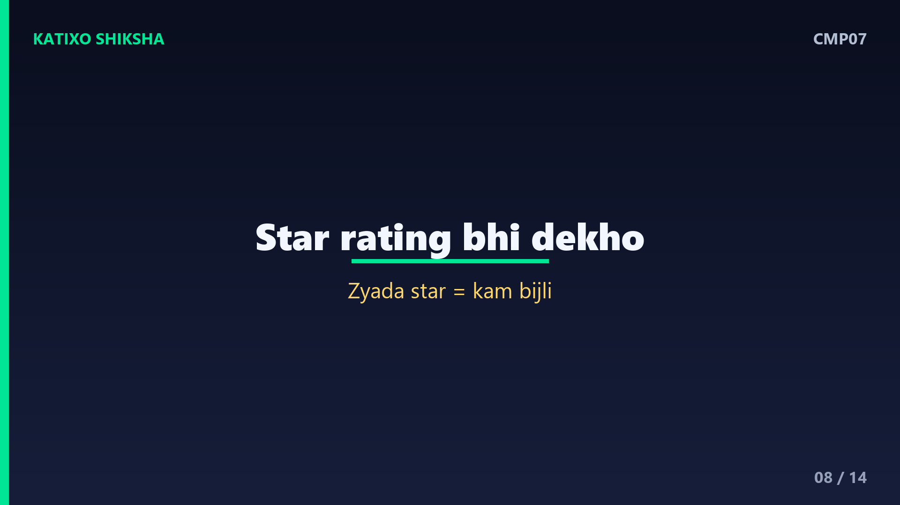
Slide 8एक ज़रूरी बात — star rating, जो दोनों तरह के AC पर लगती है. AC पर लगे star — जैसे तीन star या पाँच star — बताते हैं कि वो कितना बिजली-कुशल है। ज़्यादा star यानी कम बिजली खर्च। तो सिर्फ़ Inverter देखकर मत रुको — उसकी star rating भी देखो। एक अच्छा पाँच star Inverter AC लंबे समय में सबसे ज़्यादा बचत देता है। यानी Inverter या Normal के साथ-साथ, star rating भी आपके बिजली बिल पर सीधा असर डालती है, इसे नज़रअंदाज़ मत करना।
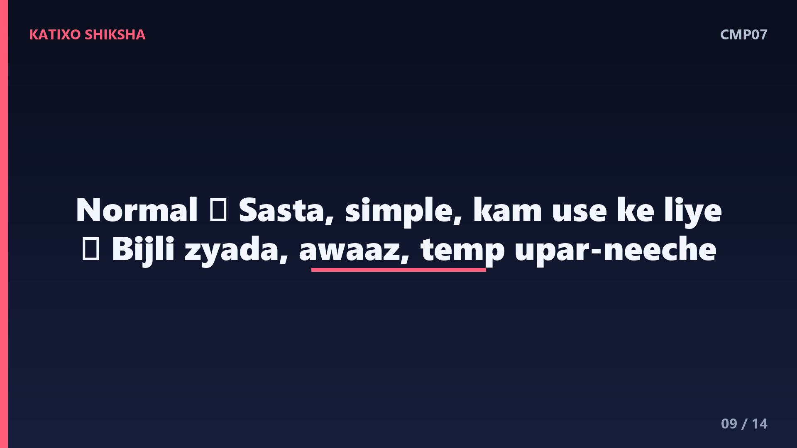
Slide 9अब Normal AC के फ़ायदे और नुक़सान. फ़ायदे — ख़रीदते समय सस्ता, बनावट सरल, और कम इस्तेमाल वालों के लिए ठीक-ठाक। नुक़सान — बिजली ज़्यादा खाता है, तापमान थोड़ा ऊपर-नीचे, और आवाज़ ज़्यादा। तो Normal AC उनके लिए ठीक है जो AC कभी-कभार ही चलाते हैं, जैसे किसी ऐसे कमरे में जो कभी-कभी ही इस्तेमाल होता है, या जिनका शुरुआती बजट बहुत tight है। रोज़ के भारी इस्तेमाल के लिए ये उतना समझदारी भरा सौदा नहीं।
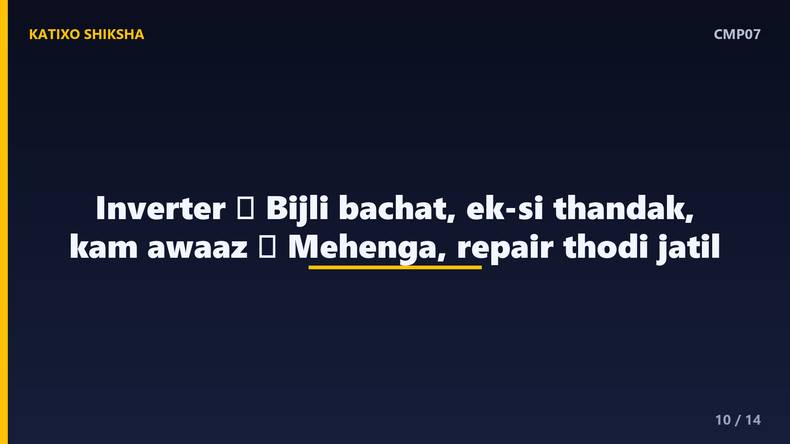
Slide 10अब Inverter AC के फ़ायदे और नुक़सान. फ़ायदे — लंबे इस्तेमाल पर अच्छी बिजली बचत, एक-सी ठंडक, कम आवाज़, और समय के साथ अतिरिक्त पैसा वापस। नुक़सान — ख़रीदते समय महँगा, और इसकी मरम्मत कभी-कभी थोड़ी जटिल और महँगी पड़ सकती है। पर रोज़ कई घंटे चलाने वालों के लिए ये नुक़सान, बिजली की बचत के सामने छोटे पड़ जाते हैं। यानी Inverter AC एक long-term समझदार निवेश है, बशर्ते आप उसे भरपूर इस्तेमाल करो।
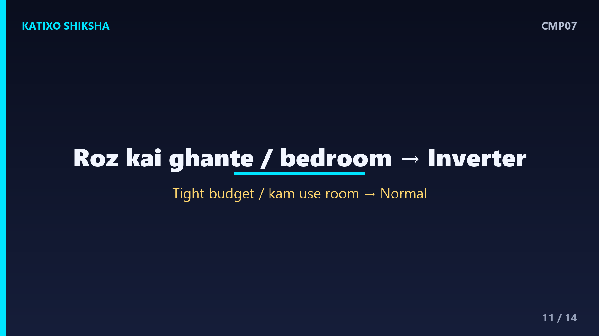
Slide 11तो किसके लिए क्या सही? Inverter AC सही है — अगर आप AC रोज़ कई घंटे चलाते हो, ख़ासकर bedroom में जहाँ रातभर चले, और आप लंबे समय की बचत चाहते हो। Normal AC सही है — अगर आपका शुरुआती बजट बहुत सीमित है, या वो कमरा बहुत कम इस्तेमाल होता है, जैसे कोई guest room जो साल में कुछ ही बार चले। यानी फ़ैसला सिर्फ़ क़ीमत से नहीं, बल्कि आप AC कितना और कहाँ चलाओगे, इससे करो।
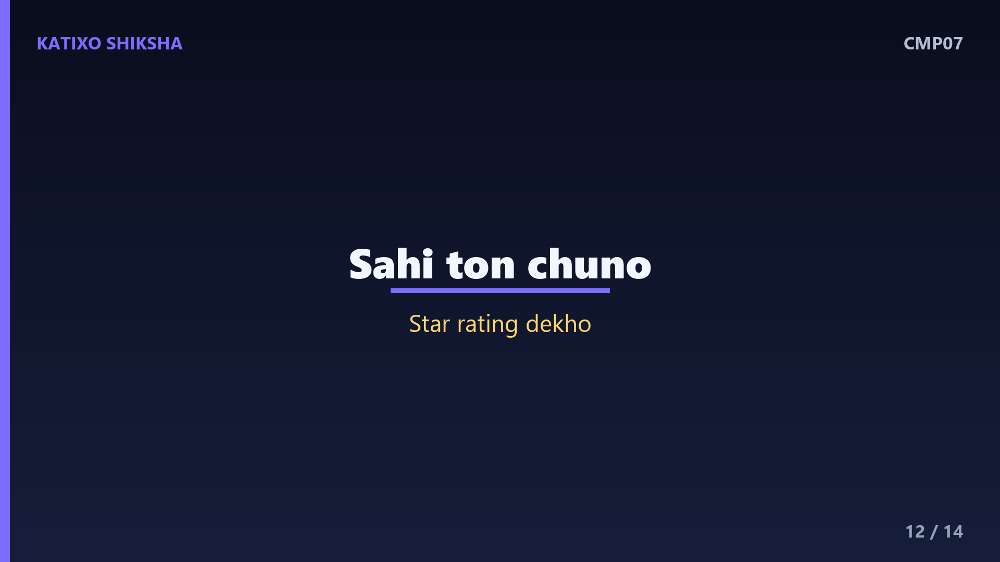
Slide 12एक समझदारी की बात, ख़रीदने से पहले. सही ton का AC चुनो — छोटे कमरे के लिए छोटा, बड़े कमरे के लिए बड़ा, वरना ना ठंडक पूरी होगी और ना बचत। star rating ज़रूर देखो, क्योंकि ज़्यादा star यानी कम बिल। और जहाँ AC रोज़ खूब चलता हो, वहाँ Inverter लगभग हमेशा बेहतर रहता है। याद रखो — AC एक बार ख़रीदते हो, पर उसका बिजली बिल बरसों भुगतते हो, इसलिए शुरुआती क़ीमत से ज़्यादा कुल ख़र्च देखना ज़्यादा समझदारी है।
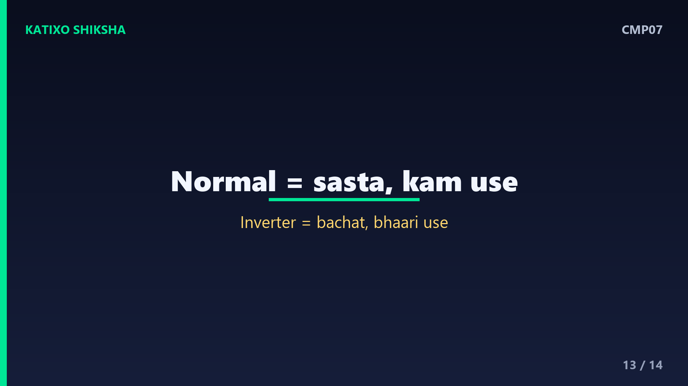
Slide 13एक quick recap. Normal AC — सस्ता, सरल, पर बिजली ज़्यादा खाता है, कम इस्तेमाल के लिए ठीक। Inverter AC — महँगा, पर एक-सी शांत ठंडक और भारी इस्तेमाल पर बढ़िया बचत, समय के साथ पैसा वापस। फ़ैसला आपके इस्तेमाल पर — रोज़ कई घंटे चले तो Inverter, बहुत कम चले तो Normal। और star rating व सही ton दोनों में ज़रूर देखो। सही AC वही है जो आपके कमरे, बजट और इस्तेमाल से मेल खाए।
Slide 14तो दोस्तों, अब Inverter AC और Normal AC का पूरा फ़र्क़ साफ़ है, और अगली बार दुकान पर आप समझदारी से, बिना बहके सही AC चुन पाओगे। याद रखो — कोई भी AC अपने आप में बेहतर नहीं, सही वही है जो आपकी ज़रूरत से मेल खाए। अगर ये comparison काम आया तो Katixo KhojLab subscribe karein, घंटी दबाएँ, और परिवार-दोस्तों के साथ share करें, ताकि वो भी समझदारी से ख़रीदारी करें। मिलते हैं अगली episode में, एक और काम की comparison के साथ।